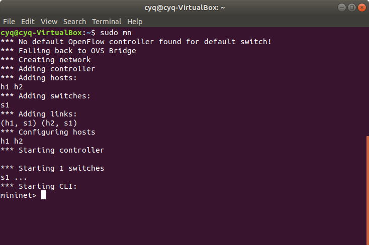
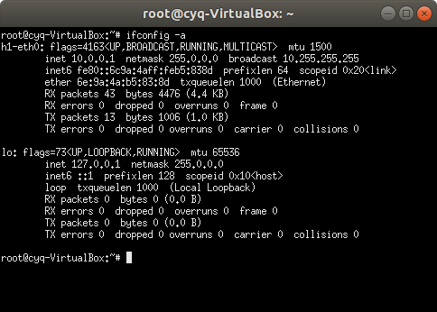

How to use Mininet
We expect that you have read the Mininet Walkthrough at least. Then here is a minimum walkthrough you should do.
Everyday Mininet Usage
First, a (perhaps obvious) note on command syntax for this walkthrough:
$preceeds Linux commands that should be typed at the shell promptmininet>preceeds Mininet commands that should be typed at Mininet’s CLI,#preceeds Linux commands that are typed at a root shell prompt
We will show the differences later.
Start Mininet
So let's start with Mininet startup options. Type the following command to display a help message. Read the output for more usages of Mininet.
$ sudo mn -h
[!WARNING|style:flat] Commands start with
sudoor run as a superuser (prompt like#) are dangerous. Avoid doing things like that. But you need run Mininet as a superuser so be careful.
Then let's build a Mininet default topology.
$ sudo mn

You will see the same output as the picture above. See what Mininet tells us. The default topology contains two hosts and one switch. They link like this
h1 --- s1 --- h2
And you now are in Mininet CLI starts with mininet>. The next thing is to interact with Hosts. Keep this open and let's go to the next subsection.
Interact with Hosts
First let's see what we can do in Mininet CLI.
mininet> help
Display nodes.
mininet > nodes
Display links.
mininet> net
Dump information about all nodes. This command is useful.
mininet> dump
You should see the switch and two hosts listed.
If the first string typed into the Mininet CLI is a host, switch or controller name, the command is executed on that node. Run a command on a host process.
mininet> h1 ifconfig -a
And you can start a pop-up terminal emulator in one host.
mininet> h1 xterm
The new window pops up here is the terminal emulator of h1. If you type ifconfig -a here, the output is totally the same as you type h1 ifconfig -a in Mininet CLI.

Test Connectivity Between Hosts
Now, verify that you can ping from host 0 to host 1. You can also do it in pop-up xterm at h1.
mininet> h1 ping -c 1 h2
An easier way to run this test is to use the Mininet CLI built-in pingall command, which does an all-pairs ping.
mininet> pingall
Run A Simple Web Server and Client
Remember that ping isn’t the only command you can run on a host! Mininet hosts can run any command or application that is available to the underlying Linux system (or VM) and its file system. You can also enter any bash command, including job control (&, jobs, kill, etc..)
Next, try starting a simple HTTP server on h1, making a request from h2, then shutting down the web server.
mininet> h1 python -m SimpleHTTPServer 80 &
mininet> h2 wget -O - h1
...
mininet> h1 kill %python
Exit the CLI.
mininet> exit
Cleanup
If Mininet crashes for some reason, clean it up.
$ sudo mn -c
Custom Topologies
Custom topologies can be easily defined as well, using a simple Python API. The example here connects 4 devices as a star topology shows below. This file is in the Switchyard repository examples/start_mininet.py.
#!/usr/bin/python
import sys
from mininet.topo import Topo
from mininet.net import Mininet
from mininet.log import lg
from mininet.node import CPULimitedHost
from mininet.link import TCLink
from mininet.util import irange, custom, quietRun, dumpNetConnections
from mininet.cli import CLI
from time import sleep, time
from subprocess import Popen, PIPE
import subprocess
import argparse
import os
parser = argparse.ArgumentParser(description="Mininet pyswitch topology")
# no arguments needed as yet :-)
args = parser.parse_args()
lg.setLogLevel('info')
class PySwitchTopo(Topo):
def __init__(self, args):
# Add default members to class.
super(PySwitchTopo, self).__init__()
# Host and link configuration
#
#
# server1
# \
# hub----client
# /
# server2
#
nodeconfig = {'cpu':-1}
self.addHost('server1', **nodeconfig)
self.addHost('server2', **nodeconfig)
self.addHost('hub', **nodeconfig)
self.addHost('client', **nodeconfig)
for node in ['server1','server2','client']:
# all links are 10Mb/s, 100 millisecond prop delay
self.addLink(node, 'hub', bw=10, delay='100ms')
def set_ip(net, node1, node2, ip):
node1 = net.get(node1)
ilist = node1.connectionsTo(net.get(node2)) # returns list of tuples
intf = ilist[0]
intf[0].setIP(ip)
def reset_macs(net, node, macbase):
ifnum = 1
node_object = net.get(node)
for intf in node_object.intfList():
node_object.setMAC(macbase.format(ifnum), intf)
ifnum += 1
for intf in node_object.intfList():
print node,intf,node_object.MAC(intf)
def set_route(net, fromnode, prefix, nextnode):
node_object = net.get(fromnode)
ilist = node_object.connectionsTo(net.get(nextnode))
node_object.setDefaultRoute(ilist[0][0])
def setup_addressing(net):
reset_macs(net, 'server1', '10:00:00:00:00:{:02x}')
reset_macs(net, 'server2', '20:00:00:00:00:{:02x}')
reset_macs(net, 'client', '30:00:00:00:00:{:02x}')
reset_macs(net, 'hub', '40:00:00:00:00:{:02x}')
set_ip(net, 'server1','hub','192.168.100.1/24')
set_ip(net, 'server2','hub','192.168.100.2/24')
set_ip(net, 'client','hub','192.168.100.3/24')
def disable_ipv6(net):
for v in net.values():
v.cmdPrint('sysctl -w net.ipv6.conf.all.disable_ipv6=1')
v.cmdPrint('sysctl -w net.ipv6.conf.default.disable_ipv6=1')
def main():
topo = PySwitchTopo(args)
net = Mininet(controller=None, topo=topo, link=TCLink, cleanup=True)
setup_addressing(net)
disable_ipv6(net)
net.interact()
if __name__ == '__main__':
main()
In general, you don't need to modify the topology file we provide. But if you do, you need the document Introduction to Mininet which gives you the Mininet Python API.
Please read it carefully. Then let's start this topology.
$ sudo python examples/start_mininet.py
In this topology, hosts can not ping each other because the device named hub has no routing rules configured, so exit here. In the section of Switchyard, we will make it work.